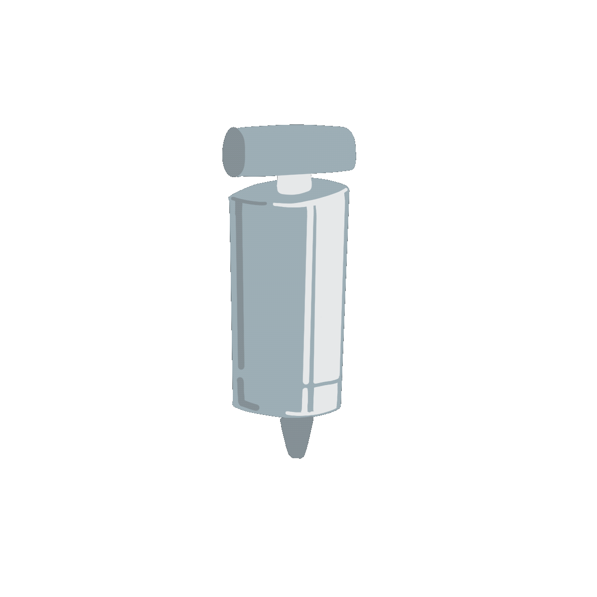
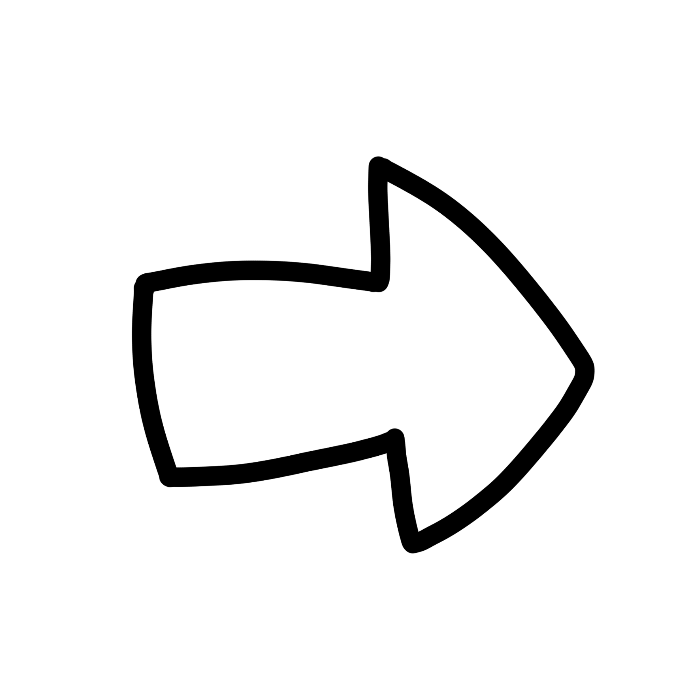

A Tale of Two Buttons
Kaylee Nasser, Caitlin McConnery, and Abdullah Ishtiaq
Description
Kaylee Nasser, lover of trivia, deserved to have a platform where she could share her interests and facts. This application allowed us to create that.Kaylee's Love Guesser has two buttons.
Swap Tool Button
This is the "swap tools" button, which will equip a tool onto the users cursor:
There are three avalible tools:
 When the user clicks the heart with the pump equipped, the heart will inflate - implying more love.
When the user clicks the heart with the hand, the heart will have air squished out of it.
 Lastly, when the heart is clicked with the check mark, Kaylee will judge the user's guess and provide her opinion.
Lastly, when the heart is clicked with the check mark, Kaylee will judge the user's guess and provide her opinion.
Heart Balloon Button
The heart button will respond to whichever tool is selected, as described above. Once the user has checked their answer they will be equipped with a new tool:
 This tool allows the user to go to the next item when they press on the heart.
Concept Sketches
In our brainstorming phase, we had a lot of ideas.Kaylee is a climber, an artist, a reptile enthusiest, and so much more...
Many of my ideas revolved around the ways that Kaylee acts, and had a focus on the user controlling Kaylee or having Kaylee react to the button presses.

- A pinball machine themed around Kaylee
- A love meter, where different items were tested against her
- A little game where she would scamper in the woods and bring you back something interesting with a fact about it.

Kaylees love for trivia had the chance to really shine through with this approach - but we weren't sure on the direction yet.

So we had a good start but had to go back to the drawing board for our button designs.
Refinements
After the concepts we knew we had to refine the button ideas. Some of my ideas were:
This idea didn't solve the third button problem, and didn't really make sense.
- A projector that would project the image on a screen. The user would slip a red or green piece of plastic over the image for hate or like.
This idea really leaned into Kaylees love for trivia and would have framed her as a host.
It would have required more buttons to go through all of the potential actions, and would have really reshaped the whole concept.
- Patting Jazzy (Kaylee's cat) to increase affection and pulling her tail to decrease it.
We didn't want to be mean to Jazzy...
We decided that adding a balloon to inflate would move us in the direction we wanted.
In this design the buttons were no longer just buttons, they interacted with each other in a whimsical way that added more user agency.
Kaylee put together our final refined sketch:

For an added touch we decided to hand draw all of the assets, to allow Kaylees artistic personality to really have a spot light as well.
Try it out!
Our final product is an application that really encapsulates all of who Kaylee is. The user gets the opportunity to get to know her in the same way we were able to.
Most importantly, it gave Kaylee the chance to yap about some of their favourite things.
The following video is a demo of the final product. This project provided a lot of challanges for our group. Having to limit ourselves to only two buttons really constrained how we could achieve the result we wanted.
The whole group did a realy good job brainstorming solutions, and the critiques helped a lot.
Kaylee did a great job making assets, providing all the data we needed, and did a great job styling the final product.
Abdullah added a lot of features to really engage the user. He did a wonderful job adding sounds and making the text catch the users eye.
I was mostly focused on creating assets and implementing the ability to equip tools to the users cursor.
We made a great team and were able to utilize our skillsets fully, helping each other along the way!
Along with all of the custom art, the background music was created by Kaylee's partner. It ensured that part of Kaylees heart was in all of it.
Our final product is an application that really encapsulates all of who Kaylee is. The user gets the opportunity to get to know her in the same way we were able to.
Most importantly, it gave Kaylee the chance to yap about some of their favourite things.
The following video is a demo of the final product. This project provided a lot of challanges for our group. Having to limit ourselves to only two buttons really constrained how we could achieve the result we wanted.
The whole group did a realy good job brainstorming solutions, and the critiques helped a lot.
Kaylee did a great job making assets, providing all the data we needed, and did a great job styling the final product.
Abdullah added a lot of features to really engage the user. He did a wonderful job adding sounds and making the text catch the users eye.
I was mostly focused on creating assets and implementing the ability to equip tools to the users cursor.
We made a great team and were able to utilize our skillsets fully, helping each other along the way!
Along with all of the custom art, the background music was created by Kaylee's partner. It ensured that part of Kaylees heart was in all of it.
Sensor Unlock
Caitlin McConnery, Emily Tan, and Carlene Kalin
Discription
For this assignment we were tasked with creating a new way to unlock a phone using the avalible sensors. While my group had many ideas, we agreed that using the device's position would be easily replicable for a user. Emily came up with a water logged idea, where the screen was filled with water and the user had to pour out a certain amount before it could be unlocked. This was the base idea of our project. This project was made with html, js, and css through Glitch. Glitch allowed us to colaborate in real time and test on our phones without having to push any code. As myself, Emily, and Carlene all use iphones, the website requires an iphone for sensor permission grants and use.Concept Sketches
During the concept phase I tried my best to conceptualize unlock features for many sensors. My ideas for camera unlocks included striking a pose or using a physical keychain. The physical keychain would work simmilarly to face id, but could be given to a friend if they needed to borrow your phone. This idea intrigued me, but if the user left the key somewhere else they would have no access to their phone. I explored motion and accelorometer unlocks next. Things like yoga routines and dance moves seemed tedious and too over the top for an unlock. The full arm rotation unlock would use the rotations diameter to confirm the users height, but would not work if the user had a growth spurt. The point to location unlock also interested me, where the user would set a home location and the user would point the phone in the cardinal direction of that location, with the help of the gps. Issues would arrive if you were at the set location, or if the user was disorriented. I think my favorite idea was the heartbeat confirmation, where the users phone would measure the users heart rate, which would have to match the timing and bpm of a smart watch that the user was wearing. I think this would have been very hard to implement, and the secondary device would add more constraint to the whole project. It was Emily that came up with a water logged idea, where the user would have to empty a screen of water to get into their phone. We allRefinements
Refinement of the water logged idea exposed some questions. Will the amount poured be clear to the user? What would be the acceptible range? We felt that the tilted water level would be hard for the user to accuritly read, so we were quite sure adding a range of acceptable levels (between 45 and 55 rather than only accepting 50) would be required. We discussed adding a percentage to the water level to make the amount poured very clear to the user, but I felt as if this would simplify the unlocking sequence a lot and reduce the security. Why water? If the phone is water logged, how would it make sense for the phone to unlock after pouring out 50%? For this we discussed the motivation of the user. Origionally we had a drinking idea, but the pouring motion felt more simmilar to watering a plant, and thought that this could be a good way for the user to recieve feedback on their login attempt. Some further ideas came from this: - The remaining water could be poured onto a plant, and if the plant thrived it would unlock the phone. - A plant would be displayed on screen and would grow as the user poured water on it. The height of the plant would be comparable to the background, and would unlock when confirmed at the right height. - A plant would be displayed on screen and a hydration meter would fill to provide feedback to the user. We agreed that we were moving in the right direction, but felt that one pour - with no other conditions - did not feel secure. With our plant expansion we discussed having to water two plants, or water one specific plant. This is where the greenhouse idea came in. How would the user initialize the unlocking process? Initially, we planned to have a scooping motion to initialize the unlock - this would fill the phone with water. Our directional change disrupted this idea as the phone displayed a plant, rather than the water that would water the plant. Because of this, we decided that clicking a plant to water would initiallize the unlock, which would ensure that a tilted phone would not How would the user check get feedback? We felt that the user should get feedback when they returned their phone to a vertical position. A green key to unlock the greenhouse door was discussed, but we agreed the phone unlocking was feedback enough that they succeeded - and would proide the authenticated user a quicker login process. As for failed login attempts, we made sure that failed attempts would be tracked. A dead plant on the screen would indicate to the user that someone had attempted to get into their phone. These dead plants could still be watered, but would give a visual represention of fails. Along with this, the user only has three attempts to successfully unlock their phone. The failure counts are communicated to the user with the background, which grows colder and eventually snows in the user. In this implementation the user is only "snowed in" for a few seconds, then the attempt counter is reset and the user can reattempt their unlock.
After our refinements and implementation we created the "Green Thumb Unlock"!
Try it out!